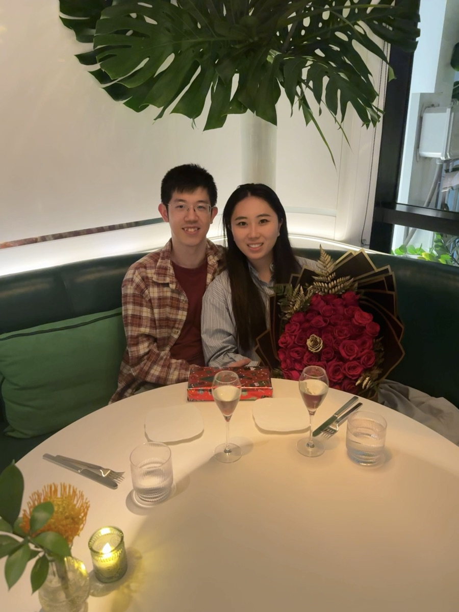

Ph.D., Electrical Engineering and Computer Science — MIT

With my fiancéeMy research lies at the intersection of statistics and computer science. I am especially interested in understanding statistical problems from a computational view — specifically, the average-case and smoothed complexity of signal recovery and optimization problems.
I completed my Ph.D. (2022–2025) and M.Eng. (2020–2022) in EECS at MIT, advised by Guy Bresler and Yury Polyanskiy. Before MIT, I studied computer science in the Yao Class at the Institute for Interdisciplinary Information Sciences, Tsinghua University.
Achievability of Heterogeneous Hypergraph Recovery from its Graph Projection [arXiv]
Preprint, 2026
Partial and Exact Recovery of a Random Hypergraph from its Graph Projection [arXiv]
Conference on Learning Theory (COLT), 2025
Thresholds for Reconstruction of Random Hypergraphs From Graph Projections [arXiv]
Conference on Learning Theory (COLT), 2024
Smoothed Complexity of SWAP in Local Graph Partitioning [arXiv]
Symposium on Discrete Algorithms (SODA), 2024
Algorithmic Decorrelation and Planted Clique in Dependent Random Graphs: The Case of Extra Triangles [arXiv]
Symposium on Foundations of Computer Science (FOCS), 2023
Linear Programs with Polynomial Coefficients and Applications to 1D Cellular Automata [arXiv]
Preprint, 2022
Generalizing Complex Hypotheses on Product Distributions: Auctions, Prophet Inequalities, and Pandora's Problem [arXiv]
Conference on Learning Theory (COLT), 2021
Smoothed Complexity of Local Max-Cut and Binary Max-CSP [arXiv]
Symposium on the Theory of Computing (STOC), 2020
Settling the Sample Complexity of Single-parameter Revenue Maximization [arXiv]
Symposium on the Theory of Computing (STOC), 2019 — also in SIGecom Exchanges, Vol. 17.2
Decomposition of a Symmetric Multipartite Observable [arXiv]
Physical Review A, May 2019
Signal Recovery in Random Graphical Models with Local Dependencies
Community recovery and signal recovery in random graphical models aim to infer latent structure from noisy relational data. Much of the classical theory is built on independent random graph models, especially Erdős–Rényi graphs and their planted variants. This thesis studies recovery in random graphical models with local dependencies, using local structure as a bridge between independent noise and globally constrained latent graph models — developing algorithmic decorrelation maps and sharp thresholds for recovery from graph projections of random hypergraphs.Download full thesis (PDF)
Reach me at chenghao@mit.edu, or find more on my MIT page and GitHub.
Download full CV